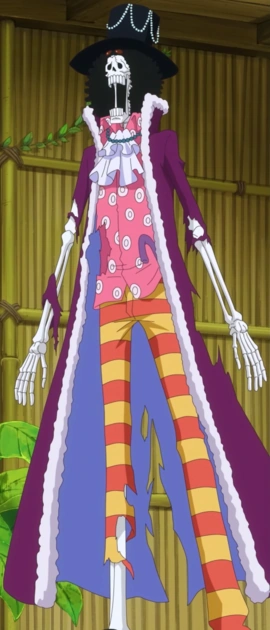

üåä Junte-se √† aventura com os Chap√©us de Palha!
Conecte-se com outros fãs de One Piece, compartilhe teorias, memes e momentos épicos do anime e mangá.
Comece sua jornada  Tripulação dos Chapéus de Palha
Tripulação dos Chapéus de Palha

Monkey D. Luffy
Capitão
Roronoa Zoro
Espadachim
Nami
Navegadora
Usopp
Atirador
Sanji
Cozinheiro
Tony Tony Chopper
Médico
Nico Robin
Arqueóloga
Franky
Carpinteiro

Brook
Músico